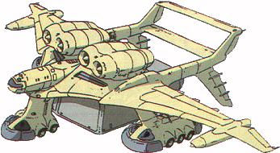

| Medea Large Atmospheric Earth Federation Transport Aircraft |
|
|  | |
General and Technical Data |
|
|
Unit type: Medea Unit type: transport plane Operator: Earth Federation Dimensions: overall length 45 meters; overall width 67.7 meters Weight: 245 metric tons; maximum cargo capacity 160 tons Construction: Titanium alloy Propulsion: 6 x jet engine Hangar capacity: 1 infantry, 3 mobile suits, 1 vehicle Launch catapults: 0 Fixed armaments: 2 x 2-barrel antiaircraft machinegun turret Bridge |
 RPG quick stats sheet
RPG quick stats sheet | Technical and Historical Notes | |
|
Developed a few years prior to the war, the Earth Federation's Medea is a great asset on the modern battlefield. Whereas the Zeon's Gaw Assault Carrier is a flying fortress with a heavy armament, the Medea is a small, relatively quick aircraft. Though large by twentieth century standards, the Medea is quite mobile due to its heavy engines and numerous maneuvering surfaces.
The Medea's airframe is quite a remarkable piece of work, though its performance is quite limited due to the unglorified box it carries under its fuselage to transfer cargo. Despite this, the Medea is still VTOL capable, allowing it to squeeze in to tighter spaces that normal aircraft would be completly cut off from. Another Medea, the C-88 type, exists in the Federal arsenal, but it is used chiefly for transporting personnell and high-priority cargo, and is not mass-produced. The "box" has a good deal of space inside of it, but its limited maximum cargo tonnage only allows it to carry three or so mobile suits (provided they're Federation models; Zeon MS frequently weigh more). There's usually also enough space left over for an aircraft or light vehicle, but it's more of a question of weight than hangar space. Whereas the Gaw's mobile suits can either paracute or land on their own power, a Medea's mobile suits must always be dropped and parachute to the ground. The Medea is a durable aircraft, but it is not intended for combat. It is lightly armed with a pair of machinegun turrets behind the cockpit, and that's all. It relies purely on fighter escorts to escape enemy air threats. |
|